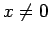

Inhalt Index DeskTop Bronstein

 Unendliche Reihen Funktionenreihen Potenzreihen Entwicklung in Taylor-Reihen, MacLaurinsche Reihe
Unendliche Reihen Funktionenreihen Potenzreihen Entwicklung in Taylor-Reihen, MacLaurinsche Reihe


MACLAURINsche Reihe wird die Entwicklung der Funktion f(x) nach Potenzen von x im Spezialfall der TAYLORschen Reihe für a = 0 genannt. Es ergibt sich
| (7.90a) |
mit dem Restglied
| (7.90b) |
| (7.90c) |
Die Konvergenz der TAYLOR- und MACLAURIN-Reihe ist entweder durch Untersuchung des Restgliedes Rn nachzuweisen oder durch Bestimmung des Konvergenzradius. Im zweiten Falle kann es vorkommen, daß die Reihe zwar konvergiert, ihre Summe S(x) aber ungleich f(x) ist. Das ist z.B. der Fall bei der Funktion für  und f(0)=0. Die Glieder ihrer MACLAURINschen Reihe sind sämtlich 0.